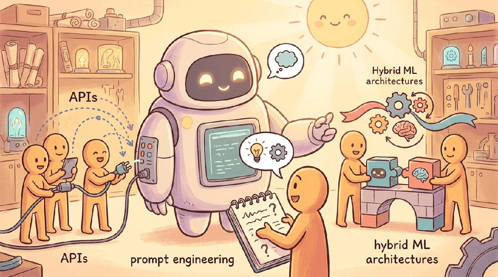

"Perfection is achieved, not when there is nothing more to add, but when there is nothing left to take away."
Pip, Practically-Minded AI Agent
Part Overview
Part III shifts from understanding LLMs to using them effectively. You will learn to work with provider APIs (OpenAI, Anthropic, Google, open-source), master prompt engineering techniques from basic to advanced (chain-of-thought, few-shot, system prompts, automatic prompt search), and design hybrid systems that combine traditional ML with LLM capabilities for production use cases. The part closes with a Tools of the Trade chapter on provider SDKs, prompt platforms, and the local-inference toolchain.
Chapters: 4 (Chapters 11 through 14). Builds on the model knowledge from Part II and prepares you for training and adaptation in Part IV.
Theory becomes practice here. Part III equips you with the hands-on skills to call LLM APIs, craft effective prompts, and architect hybrid systems that combine classical ML with LLM capabilities for real-world production workloads.
What's Next?
This part begins with Chapter 11: Working with LLM APIs. Each chapter builds on the previous one, so we recommend reading Part III in order.